<title>테네로 홈 시안</title>
<meta name="claude:viewport-fit-sides" content="cover">
<meta name="viewport" content="width=device-width, initial-scale=1, viewport-fit=cover">
<!--
  TENERO 홈·상세 시안 (2026-11-27 고침: 첫 화면 영상 1개 + 상세 3개)
  - 영상은 홈 첫 화면 한 곳만 써요. 파일 이름은 img/hero.mp4(PC), img/hero-m.mp4(폰 세로),
    포스터 img/hero.jpg, img/hero-m.jpg 로 고정이에요. 영상이 없거나 못 읽으면 포스터 사진이 그대로 보여요.
  - 나머지 자리는 모두 사진이에요. 옛 영상 파일(t-v*.mp4)은 img 에 남아 있지만 쓰지 않아요.
  - 상세 문구·사양·질문은 data.ts 값 그대로예요. 숫자 뒤 * 는 공급처·판매처 표기 기준이에요.
  - 영문 큰 제목과 제품 이름 = Bodoni Moda(높은 대비 세리프). 한글은 본명조·본고딕 그대로.
-->
<link rel="preconnect" href="https://fonts.googleapis.com">
<link rel="preconnect" href="https://fonts.gstatic.com" crossorigin>
<link href="https://fonts.googleapis.com/css2?family=Bodoni+Moda:ital,opsz,wght@0,6..96,400..700;1,6..96,400..700&family=Noto+Serif+KR:wght@400;500;600&family=Noto+Sans+KR:wght@400;500&display=swap" rel="stylesheet">
<style>
:root{
  --ink:#16100d; --ink-2:#231914; --cream:#efe6db; --cream-2:#e5d8ca; --paper:#f6f0e8;
  --on-dark:#f1e5d6; --on-dark-mute:rgba(241,229,214,.72); --text:#2a1e18; --mute:#6f5a4e;
  --line:#2a1e18; --accent:#a4664a;
  --serif-en:"Bodoni Moda","Didot","Bodoni 72","Times New Roman",Georgia,serif;
  --serif-ko:"Noto Serif KR","Nanum Myeongjo","AppleMyungjo",serif;
  --sans:"Noto Sans KR","Apple SD Gothic Neo","Malgun Gothic",system-ui,sans-serif;
  --padL:max(16px, env(safe-area-inset-left, 0px)); --padR:max(16px, env(safe-area-inset-right, 0px));
}
*{box-sizing:border-box;margin:0;padding:0}
html{background:var(--ink);-webkit-text-size-adjust:100%}
body{background:var(--ink);color:var(--text);font-family:var(--sans);font-size:16px;line-height:1.7;overflow-x:hidden}
img,video{display:block;max-width:100%}
a{color:inherit}
.wrap{max-width:1240px;margin:0 auto;padding-left:max(24px, env(safe-area-inset-left, 0px));padding-right:max(24px, env(safe-area-inset-right, 0px))}
@media (max-width:767px){.wrap{padding-left:var(--padL);padding-right:var(--padR)}}

/* 위 띠: 코르디아식 가는 메뉴 + 가는 선 */
.bar{position:fixed;inset:0 0 auto 0;z-index:50;color:var(--on-dark);padding:10px max(40px, env(safe-area-inset-right, 0px)) 0 max(40px, env(safe-area-inset-left, 0px));
  transition:background-color .35s ease}
.bar.solid{background:rgba(22,16,13,.9);-webkit-backdrop-filter:blur(10px);backdrop-filter:blur(10px)}
.bar.solid .bar-in{border-bottom-color:rgba(241,229,214,.3)}
.bar-in{display:grid;grid-template-columns:1fr auto 1fr;align-items:center;border-bottom:1px solid rgba(241,229,214,.55)}
.bar nav{display:flex;gap:clamp(18px,3.4vw,60px)}
.bar nav.r{justify-content:flex-end}
.bar nav a{font-family:var(--sans);font-size:12px;letter-spacing:.24em;text-transform:uppercase;text-decoration:none;min-height:48px;display:flex;align-items:center;gap:8px;position:relative}
.bar nav a small{font-size:12px;letter-spacing:.04em;color:var(--on-dark-mute)}
.bar nav a[aria-current="page"]::after{content:"";position:absolute;left:0;right:.24em;bottom:-1px;height:2px;background:var(--on-dark)}
.logo{font-family:var(--serif-en);font-weight:500;font-size:clamp(24px,2.1vw,32px);letter-spacing:.16em;text-decoration:none;min-height:56px;display:flex;align-items:center;padding:0 24px;line-height:1}
@media (max-width:1023px){.bar nav a small{display:none}}
@media (max-width:767px){
  .bar{padding:6px var(--padR) 0 var(--padL)}
  .bar-in{grid-template-columns:1fr 1fr;grid-template-areas:"lo lo" "l r"}
  .logo{grid-area:lo;justify-content:center;min-height:44px;font-size:22px}
  .bar nav.l{grid-area:l;justify-content:space-around}
  .bar nav.r{grid-area:r;justify-content:space-around}
  .bar nav{gap:0}
  .bar nav a{letter-spacing:.16em;min-height:44px}
}

[data-page]{display:none}
[data-page].on{display:block}

/* ===== 홈 첫 화면: 영상 1개 ===== */
.hero{position:relative;height:100vh;height:100svh;min-height:520px;overflow:hidden;background:var(--ink);color:var(--on-dark)}
.hero-ph,.hero-ph img,.hero-v{position:absolute;inset:0;width:100%;height:100%;object-fit:cover}
.hero-ph img{object-position:50% 40%}
.hero-v{z-index:1}
.hero .shade{position:absolute;inset:0;z-index:2;background:
  linear-gradient(180deg,rgba(18,11,8,.62) 0%,rgba(18,11,8,.44) 30%,rgba(18,11,8,.48) 70%,rgba(18,11,8,.66) 100%)}
.hero-copy{position:absolute;inset:0;z-index:3;display:flex;flex-direction:column;align-items:center;justify-content:center;text-align:center;padding:0 var(--padR) 0 var(--padL)}
.hero-line{font-family:var(--serif-en);font-weight:400;font-size:clamp(40px,8.4vw,124px);line-height:1;letter-spacing:-.005em;white-space:nowrap}
.hero-line em{font-style:italic}
.hero .ko-s{margin-top:clamp(18px,2.2vw,30px);color:var(--on-dark);text-shadow:0 1px 12px rgba(0,0,0,.35)}
/* 큰 글자는 획 대비를 한 단계 낮춰 화면에서 가는 선이 사라지지 않게 */
.hero-line,.big,.en-name,.it,.logo{font-variation-settings:"opsz" 14}
.hint{position:absolute;left:var(--padL);bottom:22px;z-index:4;font-family:var(--sans);font-weight:500;letter-spacing:.24em;font-size:12px;text-transform:uppercase;color:var(--on-dark-mute)}
@media (min-width:768px){.hint{left:max(40px, env(safe-area-inset-left, 0px))}}

.it{font-family:var(--serif-en);font-style:italic;font-weight:400;font-size:clamp(26px,3.4vw,52px);line-height:1.1}
.it.sm{font-size:clamp(18px,1.9vw,28px);opacity:.92}
.big{font-family:var(--serif-en);font-weight:500;text-transform:uppercase;letter-spacing:.02em;line-height:.9;font-size:clamp(64px,13vw,210px)}
.ko-s{font-family:var(--serif-ko);font-weight:500;font-size:clamp(15px,1.3vw,19px);letter-spacing:.06em;margin-top:18px}

/* ===== 홈: 크림 바탕 선 ===== */
.cream{background:var(--cream);color:var(--text)}
.intro{padding:clamp(80px,12vw,160px) 0 clamp(90px,12vw,170px);text-align:center}
.intro .linebox{height:clamp(110px,14vw,180px);display:flex;justify-content:center;align-items:flex-start;margin-bottom:40px}
.intro .vline{width:1px;height:100%;background:var(--line);transform-origin:top center;transform:scaleY(.18)}
.intro h2{font-family:var(--serif-ko);font-weight:500;font-size:clamp(22px,2.6vw,36px);line-height:1.5;letter-spacing:-.01em}
.intro p{color:var(--mute);margin-top:18px;font-size:clamp(14px,1.1vw,16px)}

/* ===== 홈: 제품 셋 ===== */
.prods{background:var(--paper);padding:clamp(60px,8vw,120px) 0}
.prod{display:grid;grid-template-columns:1.25fr 1fr;gap:clamp(28px,5vw,80px);align-items:center;margin-bottom:clamp(70px,9vw,140px)}
.prod:last-child{margin-bottom:0}
.prod.rev{grid-template-columns:1fr 1.25fr}
.prod.rev .fig{order:2}
.fig{overflow:hidden;background:var(--cream-2)}
.fig img{width:100%;height:100%;object-fit:cover}
.prod .fig{aspect-ratio:4/5;max-height:82vh;display:block}
.no{font-family:var(--serif-en);font-style:italic;font-size:18px;color:var(--accent)}
.en-name{font-family:var(--serif-en);font-weight:500;font-size:clamp(52px,7vw,108px);line-height:.95;letter-spacing:.01em;margin-top:6px}
.ko-name{font-family:var(--serif-ko);font-size:clamp(15px,1.3vw,18px);color:var(--mute);margin-top:10px;letter-spacing:.04em}
.prod .one{font-family:var(--serif-ko);font-size:clamp(18px,1.7vw,24px);margin-top:28px;line-height:1.55}
.more{display:inline-flex;align-items:center;gap:10px;margin-top:30px;min-height:48px;padding:0 22px;border:1px solid var(--line);border-radius:999px;text-decoration:none;font-size:14px;color:var(--text);transition:background-color .25s,color .25s}
.more:hover{background:var(--text);color:var(--paper)}
@media (max-width:767px){
  .prod,.prod.rev{grid-template-columns:1fr;gap:22px}
  .prod.rev .fig{order:0}
}

/* ===== 홈: 5x2 격자(사진만) ===== */
.grid-sec{background:var(--cream);padding:clamp(70px,9vw,130px) 0}
.grid-sec header{text-align:center;margin-bottom:clamp(36px,5vw,70px)}
.grid-sec .en{font-family:var(--serif-en);font-size:clamp(24px,2.4vw,36px);font-weight:400}
.grid-sec .en em{font-style:italic}
.grid-sec .ko{font-family:var(--serif-ko);font-size:clamp(20px,2.2vw,32px);font-weight:600;margin-top:8px}
.g10{display:grid;grid-template-columns:repeat(5,1fr);gap:6px;max-width:1500px;margin:0 auto;padding:0 max(24px, env(safe-area-inset-right, 0px)) 0 max(24px, env(safe-area-inset-left, 0px))}
.g10 .t{aspect-ratio:1/1;overflow:hidden;position:relative;background:var(--cream-2)}
.g10 img{width:100%;height:100%;object-fit:cover}
.g10 .cap{position:absolute;left:12px;bottom:10px;font-family:var(--sans);font-weight:500;letter-spacing:.2em;text-transform:uppercase;font-size:12px;color:#f6efe6;text-shadow:0 1px 8px rgba(0,0,0,.55)}
@media (max-width:767px){.g10{grid-template-columns:repeat(2,1fr);padding-left:var(--padL);padding-right:var(--padR)}}

/* ===== 끝 ===== */
.end{background:var(--ink);color:var(--on-dark);text-align:center;padding:clamp(110px,14vw,200px) 0 60px}
.end h2{font-family:var(--serif-ko);font-weight:500;font-size:clamp(22px,2.6vw,36px)}
.end .mark{font-family:var(--serif-en);letter-spacing:.42em;font-size:14px;margin-top:70px;color:var(--on-dark-mute)}
.end .back{display:inline-flex;align-items:center;min-height:48px;padding:0 22px;margin-top:34px;border:1px solid var(--on-dark-mute);border-radius:999px;text-decoration:none;font-size:14px}

/* ===== 상세 ===== */
.d-hero{position:relative;min-height:100vh;min-height:100svh;color:var(--on-dark);background:var(--ink);overflow:hidden;display:flex;align-items:flex-end}
.d-hero .bg{position:absolute;inset:0}
.d-hero .bg img{width:100%;height:100%;object-fit:cover;object-position:60% 50%}
.d-hero .bg::after{content:"";position:absolute;inset:0;background:linear-gradient(90deg,rgba(18,11,8,.78) 0%,rgba(18,11,8,.35) 55%,rgba(18,11,8,.1) 100%)}
.d-hero .txt{position:relative;z-index:2;padding-bottom:clamp(60px,10vh,120px);width:100%}
.d-hero .big{font-size:clamp(70px,12vw,200px)}
.d-hero .ko-s{margin-top:14px}
.d-hero .lead{font-family:var(--serif-ko);font-size:clamp(20px,2.2vw,30px);margin-top:36px;line-height:1.5}
.d-hero .sub{color:var(--on-dark-mute);margin-top:10px;max-width:30em}
@media (max-width:767px){.d-hero .bg::after{background:linear-gradient(0deg,rgba(18,11,8,.85) 0%,rgba(18,11,8,.4) 60%,rgba(18,11,8,.2) 100%)}.d-hero .bg img{object-position:62% 40%}}
.sec{padding:clamp(80px,10vw,150px) 0}
.sec-h{text-align:center;margin-bottom:clamp(40px,5vw,72px)}
.sec-h .en{font-family:var(--serif-en);font-style:italic;font-size:clamp(20px,1.9vw,26px);color:var(--accent)}
.sec-h h2{font-family:var(--serif-ko);font-weight:600;font-size:clamp(24px,2.6vw,38px);margin-top:6px;line-height:1.45}
.three{display:grid;grid-template-columns:repeat(3,1fr);gap:clamp(18px,2.4vw,36px)}
.three .fig{aspect-ratio:4/5}
.three .n{font-family:var(--serif-en);font-size:15px;color:var(--accent);margin-top:20px;display:block;letter-spacing:.1em}
.three h3{font-family:var(--serif-ko);font-weight:600;font-size:clamp(19px,1.6vw,23px);margin-top:4px}
.three p{color:var(--mute);margin-top:8px;font-size:15px}
@media (max-width:767px){.three{grid-template-columns:1fr;gap:44px}}
.scene-big{background:var(--ink);color:var(--on-dark)}
.scene-big .fig{aspect-ratio:16/8.4;background:var(--ink-2)}
.scene-big .cap{text-align:center;padding:clamp(50px,7vw,90px) 0 clamp(80px,9vw,130px)}
.scene-big .cap h2{font-family:var(--serif-ko);font-weight:500;font-size:clamp(24px,2.8vw,40px)}
.scene-big .cap p{color:var(--on-dark-mute);max-width:34em;margin:16px auto 0}
@media (max-width:767px){.scene-big .fig{aspect-ratio:4/5}}
.feat{display:grid;grid-template-columns:1fr 1fr 1fr;gap:clamp(18px,2.4vw,36px);align-items:start}
.feat .fig{aspect-ratio:1/1}
.feat h3{font-family:var(--serif-ko);font-weight:600;font-size:20px;margin-top:20px}
.feat p,.feat li{color:var(--mute);font-size:15px;margin-top:8px}
.feat ol{list-style:none;counter-reset:s;margin-top:6px}
.feat ol li{counter-increment:s;padding:14px 0;border-top:1px solid rgba(42,30,24,.18);display:flex;gap:14px;margin:0}
.feat ol li::before{content:counter(s,decimal-leading-zero);font-family:var(--serif-en);color:var(--accent)}
.feat .box{background:var(--paper);padding:clamp(22px,2.6vw,36px)}
@media (max-width:767px){.feat{grid-template-columns:1fr;gap:44px}}
.spec{max-width:820px;margin:0 auto;border-top:1px solid var(--line);width:100%;border-collapse:collapse}
.spec th,.spec td{text-align:left;padding:16px 4px;border-bottom:1px solid rgba(42,30,24,.18);font-size:15px;vertical-align:top}
.spec th{font-weight:500;width:38%;color:var(--text)}
.spec td{color:var(--mute)}
.note{max-width:820px;margin:14px auto 0;font-size:13px;color:var(--mute)}
.faq{max-width:820px;margin:0 auto;border-top:1px solid var(--line)}
.faq details{border-bottom:1px solid rgba(42,30,24,.18)}
.faq summary{list-style:none;cursor:pointer;display:flex;justify-content:space-between;gap:16px;align-items:center;min-height:60px;padding:14px 4px;font-family:var(--serif-ko);font-size:clamp(16px,1.3vw,18px);font-weight:500}
.faq summary::-webkit-details-marker{display:none}
.faq summary::after{content:"+";font-family:var(--sans);font-weight:400;font-size:24px;line-height:1;color:var(--accent);flex:none;width:24px;text-align:center}
.faq details[open] summary::after{content:"\2013"}
.faq .a{padding:0 4px 20px;color:var(--mute);font-size:15px}
.paper{background:var(--paper)}
:focus-visible{outline:2px solid var(--accent);outline-offset:3px}

@media (prefers-reduced-motion:reduce){
  .hero-v{display:none}
  .bar{transition:none}
}
</style>

<header class="bar" id="bar">
  <div class="bar-in">
    <nav class="l" aria-label="메뉴 왼쪽">
      <a href="#home" data-to="home">Home</a>
      <a href="#tepore" data-to="tepore" aria-label="테포레 족욕기">Tepore <small>족욕기</small></a>
    </nav>
    <a class="logo" href="#home" aria-label="테네로 홈">TENERO</a>
    <nav class="r" aria-label="메뉴 오른쪽">
      <a href="#carezza" data-to="carezza" aria-label="카레차 목어깨 마사지기">Carezza <small>목어깨</small></a>
      <a href="#respiro" data-to="respiro" aria-label="레스피로 다리 마사지기">Respiro <small>다리</small></a>
    </nav>
  </div>
</header>

<!-- ============ 홈 ============ -->
<main data-page="home" id="page-home">
  <section class="hero" id="hero" aria-label="테네로 첫 화면">
    <picture class="hero-ph">
      <source media="(max-width: 767px)" srcset="img/hero-m.jpg">
      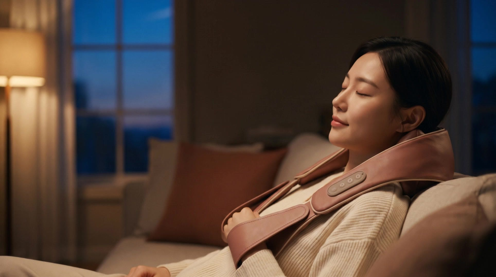
    </picture>
    <video class="hero-v" id="heroV" muted autoplay loop playsinline preload="metadata" poster="img/hero.jpg"
      data-pc="img/hero.mp4" data-m="img/hero-m.mp4" data-pc-poster="img/hero.jpg" data-m-poster="img/hero-m.jpg" aria-hidden="true"></video>
    <div class="shade"></div>
    <div class="hero-copy">
      <h1 class="hero-line"><em>Tonight,</em> gently</h1>
      <p class="ko-s">오늘의 나에게, 다정하게.</p>
    </div>
    <p class="hint">Scroll</p>
  </section>

  <section class="cream intro">
    <div class="wrap">
      <div class="linebox"><span class="vline"></span></div>
      <h2>하루 끝에서만큼은, 나에게 다정해지자는 마음이에요.</h2>
      <p>테네로는 앉은 자리에서 쓰는 세 가지 온기예요.<br>발, 목과 어깨, 다리. 하루를 가장 오래 버틴 곳부터 챙겨요.</p>
    </div>
  </section>

  <section class="prods" aria-label="제품 셋">
    <div class="wrap">
      <article class="prod">
        <a class="fig rv" href="#tepore" tabindex="-1" aria-hidden="true">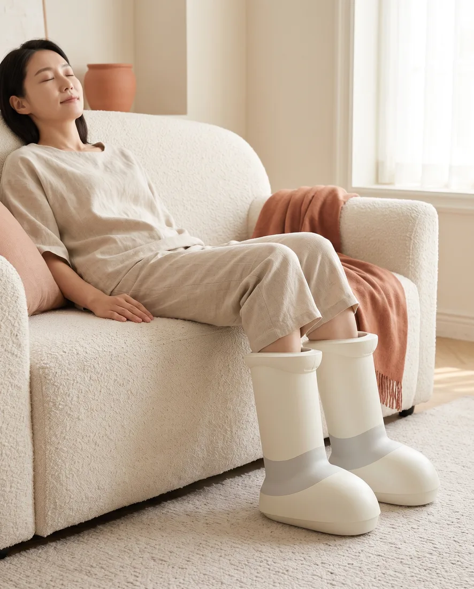</a>
        <div>
          <p class="no">No. 01</p>
          <h3 class="en-name">TEPORE</h3>
          <p class="ko-name">테포레 족욕기</p>
          <p class="one">하루의 끝, 발부터 따뜻하게.<br>앉은 채 발을 넣고, 쓴 뒤에는 도크에 꽂아 둬요.</p>
          <a class="more" href="#tepore">자세히 보기 <span aria-hidden="true">&rarr;</span></a>
        </div>
      </article>
      <article class="prod rev">
        <a class="fig rv" href="#carezza" tabindex="-1" aria-hidden="true">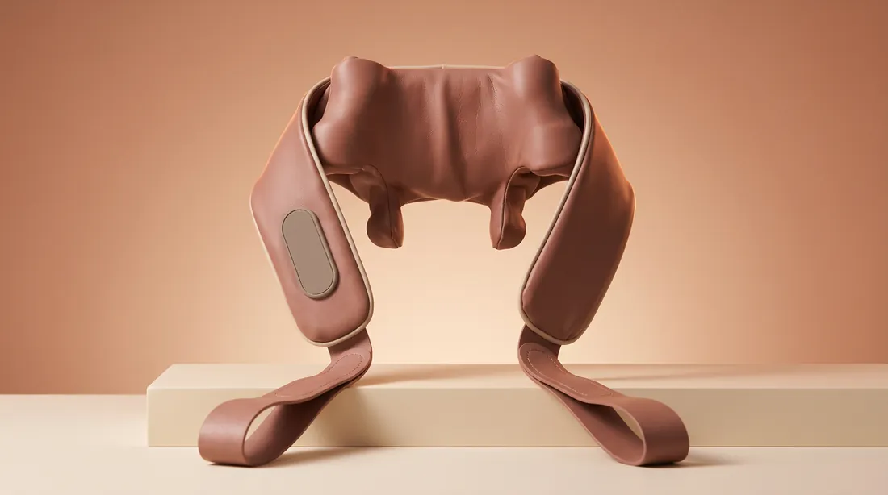</a>
        <div>
          <p class="no">No. 02</p>
          <h3 class="en-name">CAREZZA</h3>
          <p class="ko-name">카레차 목어깨 마사지기</p>
          <p class="one">목과 어깨에, 온기 한 겹.<br>선 없이 두르는 무선 온열 안마기예요.</p>
          <a class="more" href="#carezza">자세히 보기 <span aria-hidden="true">&rarr;</span></a>
        </div>
      </article>
      <article class="prod">
        <a class="fig rv" href="#respiro" tabindex="-1" aria-hidden="true">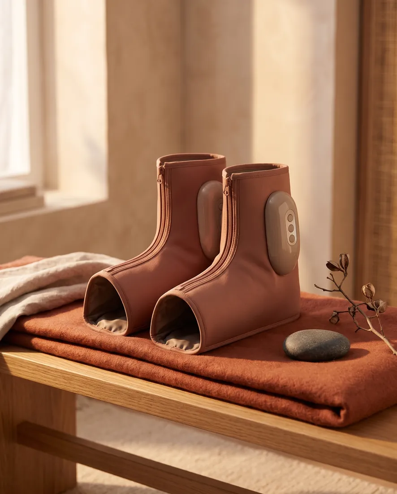</a>
        <div>
          <p class="no">No. 03</p>
          <h3 class="en-name">RESPIRO</h3>
          <p class="ko-name">레스피로 다리 마사지기</p>
          <p class="one">공기가 천천히, 감싸고 놓아 줘요.<br>앉아서 신고 15분*, 발과 발목을 감싸요.</p>
          <a class="more" href="#respiro">자세히 보기 <span aria-hidden="true">&rarr;</span></a>
        </div>
      </article>
    </div>
  </section>

  <section class="grid-sec" aria-label="작은 장면들">
    <header class="wrap">
      <p class="en">Small <em>rituals</em>, every evening</p>
      <p class="ko">하루의 끝을 채우는 작은 장면들</p>
    </header>
    <div class="g10">
      <div class="t rv"><span class="cap">Glow</span></div>
      <div class="t rv"><span class="cap">Touch</span></div>
      <div class="t rv">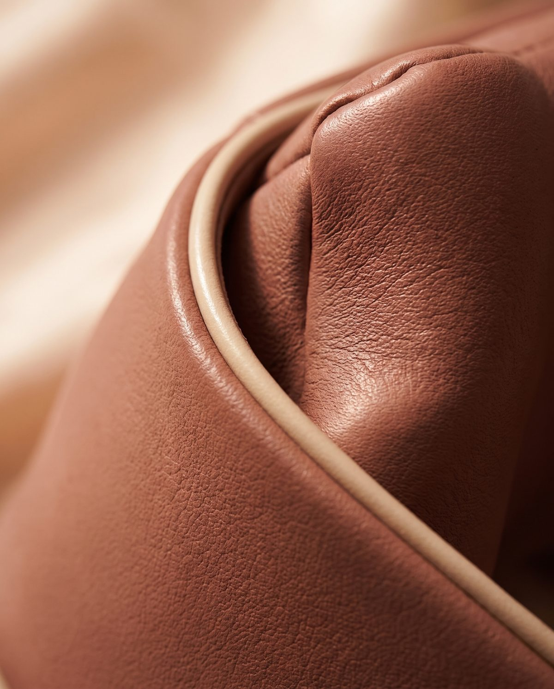<span class="cap">Seam</span></div>
      <div class="t rv">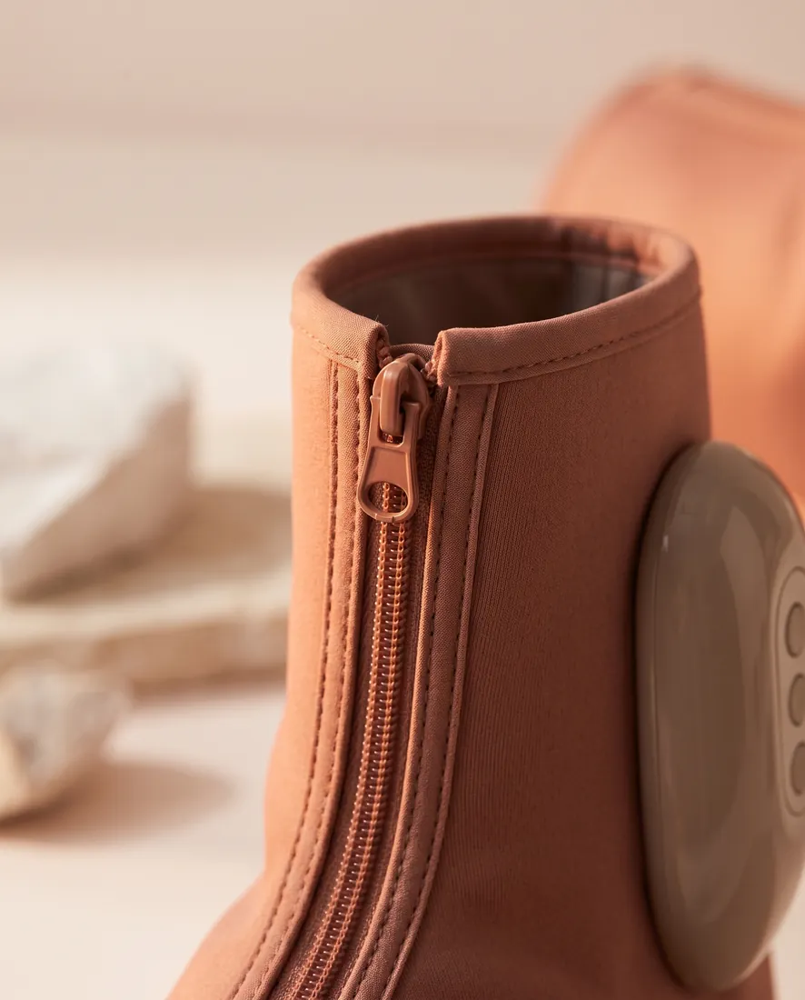<span class="cap">Zip</span></div>
      <div class="t rv">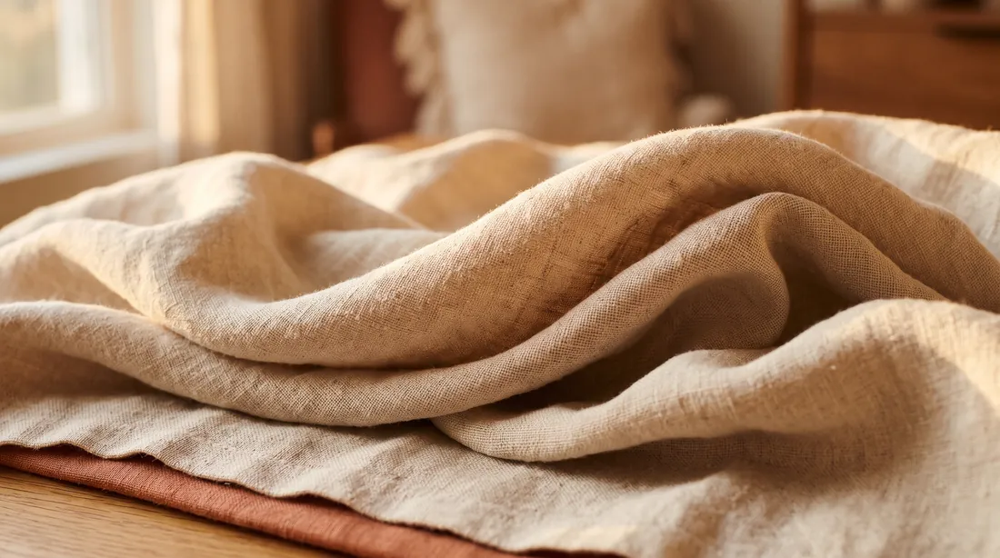<span class="cap">Linen</span></div>
      <div class="t rv"><span class="cap">Warmth</span></div>
      <div class="t rv"><span class="cap">Edge</span></div>
      <div class="t rv">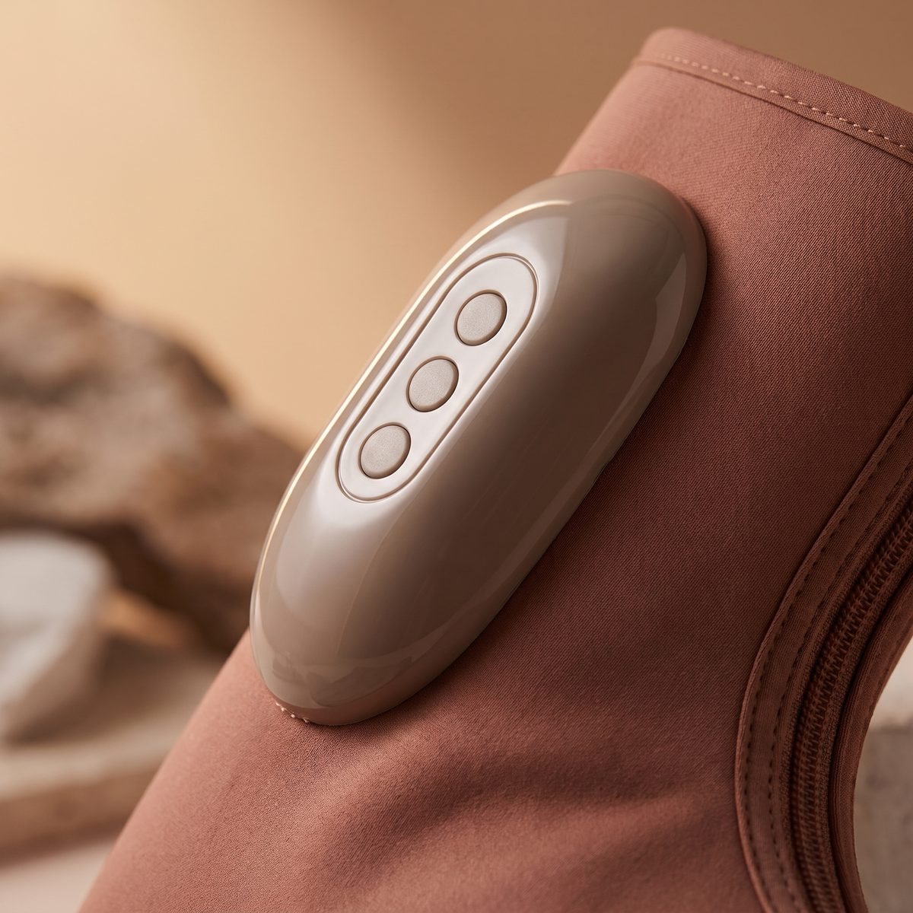<span class="cap">Press</span></div>
      <div class="t rv"><span class="cap">Air</span></div>
      <div class="t rv"><span class="cap">Dusk</span></div>
    </div>
  </section>

  <footer class="end">
    <div class="wrap">
      <h2>오늘의 나에게, 다정하게.</h2>
      <p class="mark">TENERO</p>
    </div>
  </footer>
</main>

<!-- ============ 상세 1: 테포레 족욕기 ============ -->
<main data-page="tepore" id="page-tepore">
  <section class="d-hero">
    <div class="bg rv">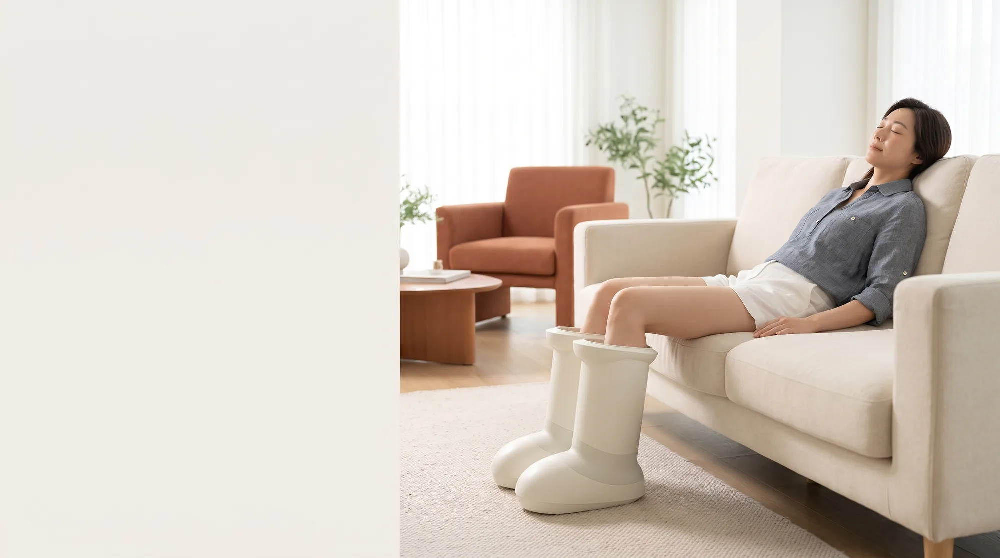</div>
    <div class="txt wrap">
      <p class="it sm">Tonight, at your feet</p>
      <h1 class="big">TEPORE</h1>
      <p class="ko-s">테포레 족욕기</p>
      <p class="lead">하루의 끝, 발부터 따뜻하게.</p>
      <p class="sub">무릎 높이 부츠에 앉은 채 발을 넣어요. 쓴 뒤에는 도크에 꽂아 둬요.</p>
    </div>
  </section>

  <section class="sec paper">
    <div class="wrap">
      <div class="sec-h"><p class="en">Three reasons</p><h2>앉은 채로, 세 가지가 달라요.</h2></div>
      <div class="three">
        <div><div class="fig rv"></div><span class="n">01</span><h3>90초 안에 데워져요*</h3><p>2,000W* 히팅 파이프가 물을 데워요. 기다리는 시간이 짧아요.</p></div>
        <div><div class="fig rv"></div><span class="n">02</span><h3>부츠 안에서 눌러 줘요</h3><p>공기 주머니 15개*가 발과 종아리를 천천히 눌러 줘요. 기포가 물을 돌려요.</p></div>
        <div><div class="fig rv">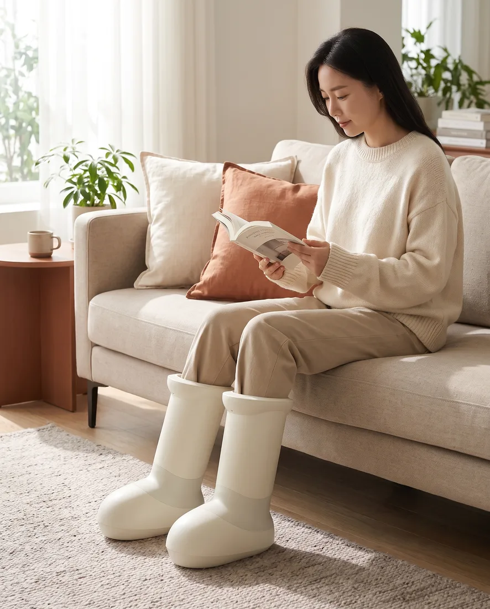</div><span class="n">03</span><h3>종아리까지 닿아요</h3><p>물 깊이 30cm*, 무릎 높이 부츠가 종아리까지 감싸요. 대야로는 닿기 어려운 높이예요.</p></div>
      </div>
    </div>
  </section>

  <section class="scene-big">
    <div class="fig rv">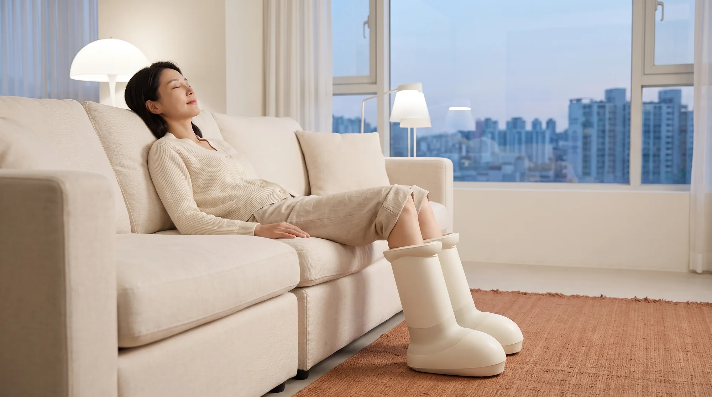</div>
    <div class="cap wrap">
      <h2>영상 한 편이 끝날 때까지.</h2>
      <p>담요를 깔고 소파에 앉아요. 시간은 최대 40분* 안에서 정하고, 예약도 할 수 있어요. 끝나면 부츠를 도크에 꽂고 불을 낮춰요.</p>
    </div>
  </section>

  <section class="sec cream">
    <div class="wrap">
      <div class="sec-h"><p class="en">How it works</p><h2>꺼내고, 넣고, 꽂아 둬요.</h2></div>
      <div class="feat">
        <div><div class="fig rv">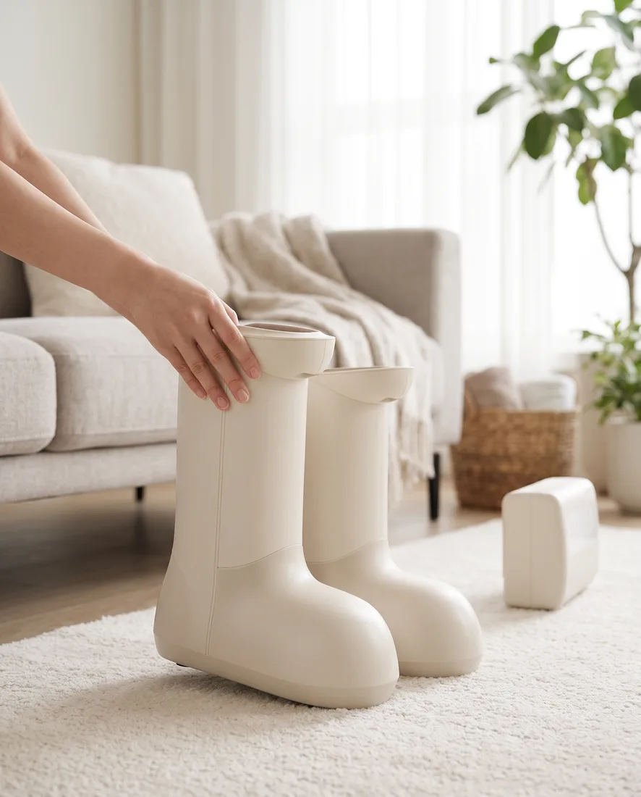</div><h3>도크에 꽂으면 말라요</h3><p>뒤집어 말릴 필요가 없어요. 도크에 꽂아 두면 히팅으로 말려요.</p></div>
        <div><div class="fig rv">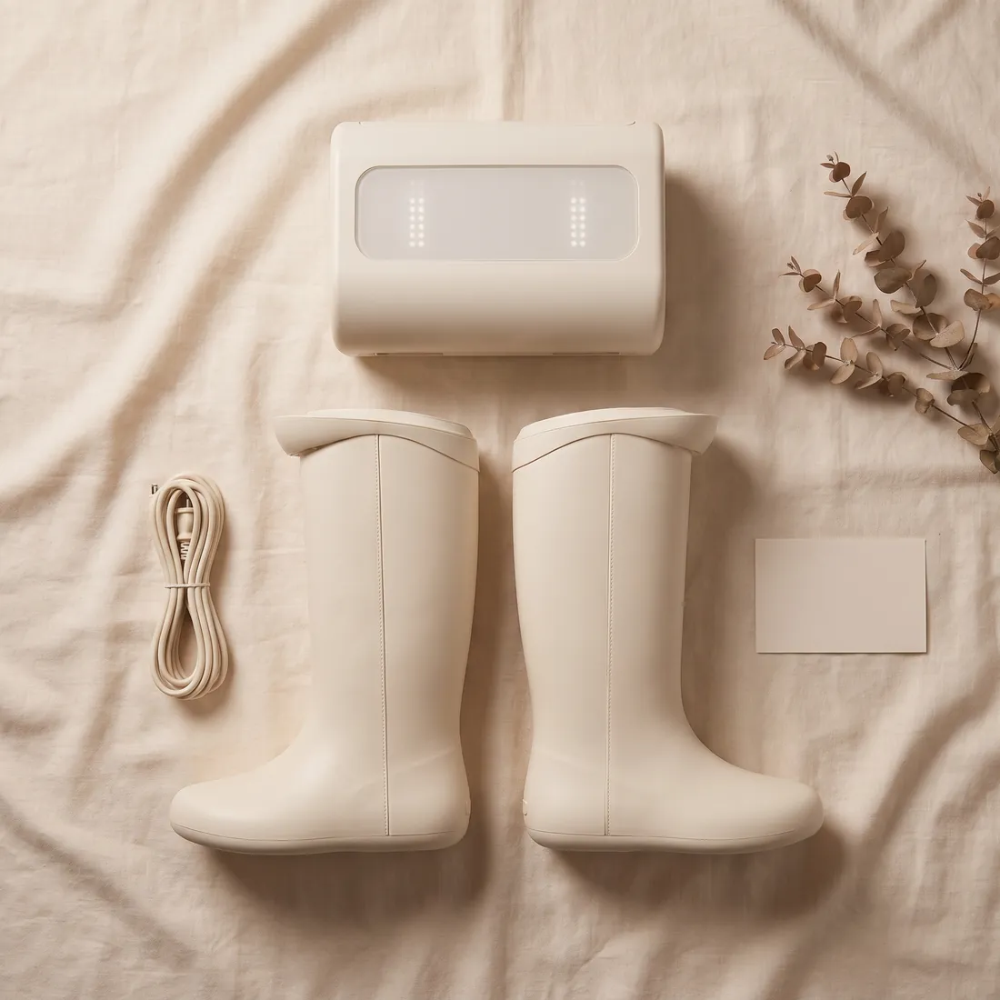</div><h3>받으면 이렇게 들어 있어요</h3><p>부츠 2개 · 건조 도크 1개 · 조작부 기둥과 안내서는 확인 중이에요.</p></div>
        <div class="box"><h3 style="margin-top:0">쓰는 순서</h3><ol><li>도크에서 부츠를 꺼내요</li><li>앉아서 발을 넣고 시작해요. 예약도 할 수 있어요</li><li>끝나면 도크에 꽂아 둬요</li></ol><p>물 넣는 양과 안전 사용법은 안내서에 적어요.</p></div>
      </div>
    </div>
  </section>

  <section class="sec paper">
    <div class="wrap">
      <div class="sec-h"><p class="en">Specification</p><h2>사양</h2></div>
      <table class="spec">
        <tr><th>구성</th><td>부츠 2개 + 건조 도크</td></tr>
        <tr><th>데움</th><td>90초*</td></tr>
        <tr><th>히팅 파이프</th><td>2,000W*</td></tr>
        <tr><th>공기 주머니</th><td>15개*</td></tr>
        <tr><th>물 깊이</th><td>30cm*</td></tr>
        <tr><th>최대 작동</th><td>40분*, 예약 가능</td></tr>
        <tr><th>색</th><td>확인 중</td></tr>
        <tr><th>크기·무게·물 양·소음·전원 방식</th><td>확인 중</td></tr>
      </table>
      <p class="note">* 는 공급처·판매처 표기 기준이에요. 수입 전 실측해서 고쳐요.</p>
    </div>
  </section>

  <section class="sec cream faq-sec">
    <div class="wrap">
      <div class="sec-h"><p class="en">Questions</p><h2>자주 묻는 질문</h2></div>
      <div class="faq">
        <details open><summary>물은 얼마나 넣어요?</summary><p class="a">정확한 양은 확인 중이에요. 물 깊이는 30cm* 표기예요.</p></details>
        <details><summary>얼마나 오래 쓸 수 있어요?</summary><p class="a">최대 40분*이고 예약도 할 수 있어요.</p></details>
        <details><summary>쓴 뒤 어떻게 관리해요?</summary><p class="a">도크에 꽂아 두면 히팅으로 말라요. 세척 방법은 확인 중이에요.</p></details>
        <details><summary>소리와 무게는 어때요?</summary><p class="a">실물 확인 뒤 적을게요.</p></details>
        <details><summary>선물할 수 있어요?</summary><p class="a">포장과 카드는 확인 중이에요. 교환·보증 안내도 확정 뒤 이 자리에 적을게요.</p></details>
      </div>
    </div>
  </section>

  <footer class="end">
    <div class="wrap">
      <h2>하루의 끝, 발부터 따뜻하게.</h2>
      <a class="back" href="#home">&larr; 홈으로</a>
      <p class="mark">TENERO</p>
    </div>
  </footer>
</main>

<!-- ============ 상세 2: 카레차 목어깨 마사지기 ============ -->
<main data-page="carezza" id="page-carezza">
  <section class="d-hero">
    <div class="bg rv">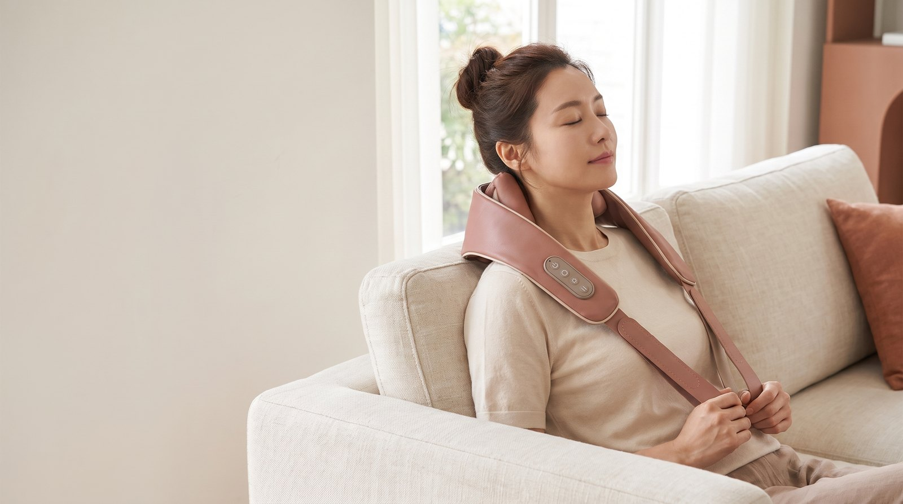</div>
    <div class="txt wrap">
      <p class="it sm">Warm, wireless</p>
      <h1 class="big">CAREZZA</h1>
      <p class="ko-s">카레차 목어깨 마사지기</p>
      <p class="lead">목과 어깨에, 온기 한 겹.</p>
      <p class="sub">선 없이 두르는 무선 온열 안마기예요.</p>
    </div>
  </section>

  <section class="sec paper">
    <div class="wrap">
      <div class="sec-h"><p class="en">Three reasons</p><h2>앉은 자리에서, 세 가지가 달라요.</h2></div>
      <div class="three">
        <div><div class="fig rv"></div><span class="n">01</span><h3>주무르듯 움직여요</h3><p>손으로 주무르듯 움직이는 방식이에요. 목 뒤를 천천히 따라 움직여요.</p></div>
        <div><div class="fig rv"></div><span class="n">02</span><h3>온기가 함께해요</h3><p>온열이 함께 작동해요. 온도 단계는 확인 중이에요.</p></div>
        <div><div class="fig rv">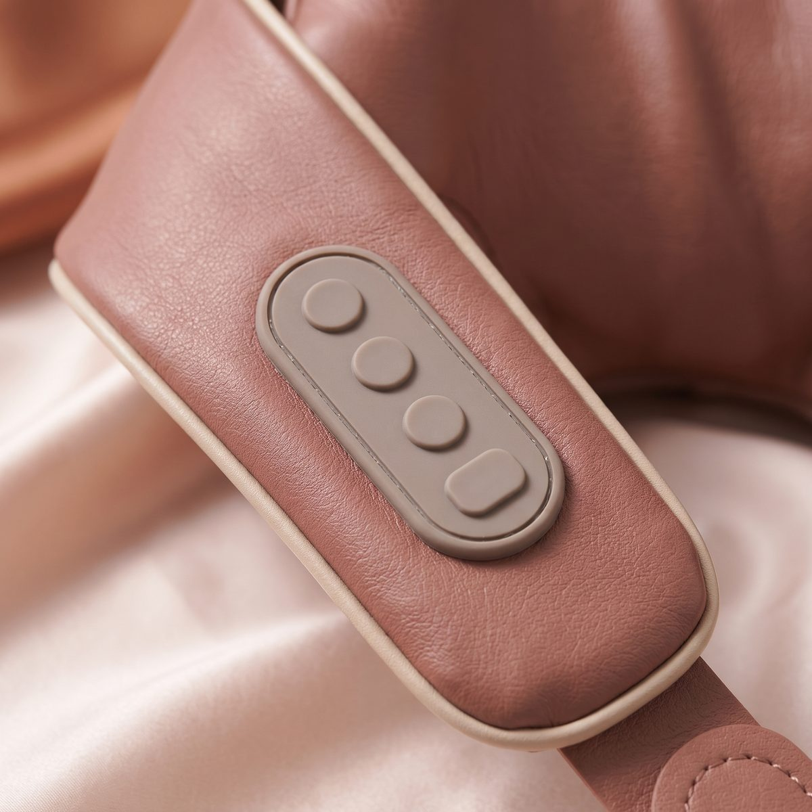</div><span class="n">03</span><h3>10분 뒤 스스로 꺼져요*</h3><p>시간을 재지 않아도 돼요. 2모드* 2강도*를 버튼으로 골라요.</p></div>
      </div>
    </div>
  </section>

  <section class="scene-big">
    <div class="fig rv">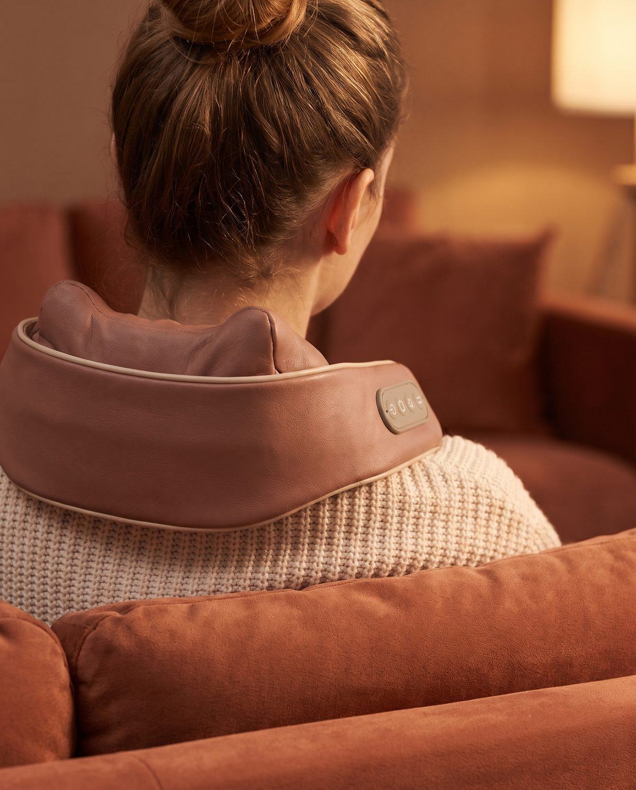</div>
    <div class="cap wrap">
      <h2>가방을 내려놓고, 딱 십 분.</h2>
      <p>퇴근해서 목 뒤로 두르고 끈을 앞에서 맞춰요. 버튼 하나로 시작하면 10분* 뒤 스스로 꺼져요. 그다음은 차를 끓이는 저녁이에요.</p>
    </div>
  </section>

  <section class="sec cream">
    <div class="wrap">
      <div class="sec-h"><p class="en">How it works</p><h2>두르고, 맞추고, 눌러요.</h2></div>
      <div class="feat">
        <div><div class="fig rv"></div><h3>선이 없어요</h3><p>C타입으로 충전하는 무선 방식이에요. 사용 137분*, 앉는 자리를 가리지 않아요.</p></div>
        <div><div class="fig rv">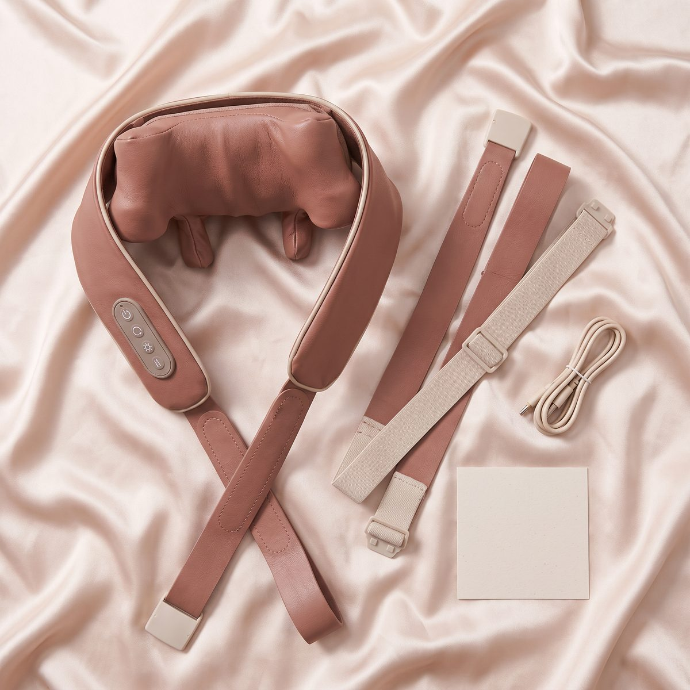</div><h3>작은 상자에 가지런히</h3><p>본체 1개 · 충전 케이블과 안내서는 확인 중이에요.</p></div>
        <div class="box"><h3 style="margin-top:0">쓰는 순서</h3><ol><li>목 뒤로 둘러요</li><li>양쪽 끈을 앞에서 맞춰요</li><li>버튼으로 모드와 세기를 골라요</li></ol><p>끈 길이와 주의 사항은 안내서에 적어요.</p></div>
      </div>
    </div>
  </section>

  <section class="sec paper">
    <div class="wrap">
      <div class="sec-h"><p class="en">Specification</p><h2>사양</h2></div>
      <table class="spec">
        <tr><th>방식</th><td>주무름 + 온열</td></tr>
        <tr><th>모드·세기</th><td>2모드* 2강도*</td></tr>
        <tr><th>배터리</th><td>7.4V* 2500mAh*</td></tr>
        <tr><th>충전</th><td>C타입, 239분*</td></tr>
        <tr><th>사용</th><td>137분*</td></tr>
        <tr><th>자동 꺼짐</th><td>10분*</td></tr>
        <tr><th>무게·크기·소재·온열 온도·소음</th><td>확인 중</td></tr>
      </table>
      <p class="note">* 는 공급처·판매처 표기 기준이에요. 수입 전 실측해서 고쳐요.</p>
    </div>
  </section>

  <section class="sec cream faq-sec">
    <div class="wrap">
      <div class="sec-h"><p class="en">Questions</p><h2>자주 묻는 질문</h2></div>
      <div class="faq">
        <details open><summary>한 번 충전하면 얼마나 써요?</summary><p class="a">공급처 표기는 사용 137분*이에요. 수입 전 실측해요.</p></details>
        <details><summary>어떻게 충전해요?</summary><p class="a">C타입으로 충전하고, 충전 시간은 239분* 표기예요.</p></details>
        <details><summary>오래 켜 둬도 돼요?</summary><p class="a">10분* 뒤 자동으로 꺼져요. 다시 쓰는 방법은 확인 중이에요.</p></details>
        <details><summary>무게와 소리는 어때요?</summary><p class="a">실물 확인 뒤 적을게요.</p></details>
        <details><summary>선물할 수 있어요?</summary><p class="a">포장과 카드는 확인 중이에요. 교환·보증 안내도 확정 뒤 이 자리에 적을게요.</p></details>
      </div>
    </div>
  </section>

  <footer class="end">
    <div class="wrap">
      <h2>목과 어깨에, 온기 한 겹.</h2>
      <a class="back" href="#home">&larr; 홈으로</a>
      <p class="mark">TENERO</p>
    </div>
  </footer>
</main>

<!-- ============ 상세 3: 레스피로 다리 마사지기 ============ -->
<main data-page="respiro" id="page-respiro">
  <section class="d-hero">
    <div class="bg rv">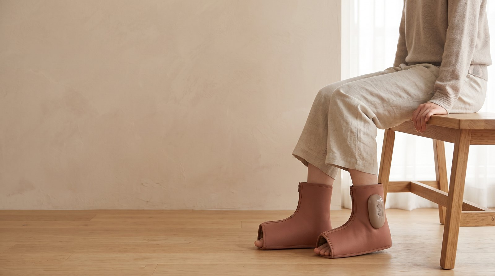</div>
    <div class="txt wrap">
      <p class="it sm">Held, then released</p>
      <h1 class="big">RESPIRO</h1>
      <p class="ko-s">레스피로 다리 마사지기</p>
      <p class="lead">공기가 천천히, 감싸고 놓아 줘요.</p>
      <p class="sub">앉아서 신고 15분*. 발과 발목을 감싸는 에어 부츠예요.</p>
    </div>
  </section>

  <section class="sec paper">
    <div class="wrap">
      <div class="sec-h"><p class="en">Three reasons</p><h2>신고 앉으면, 세 가지가 달라요.</h2></div>
      <div class="three">
        <div><div class="fig rv">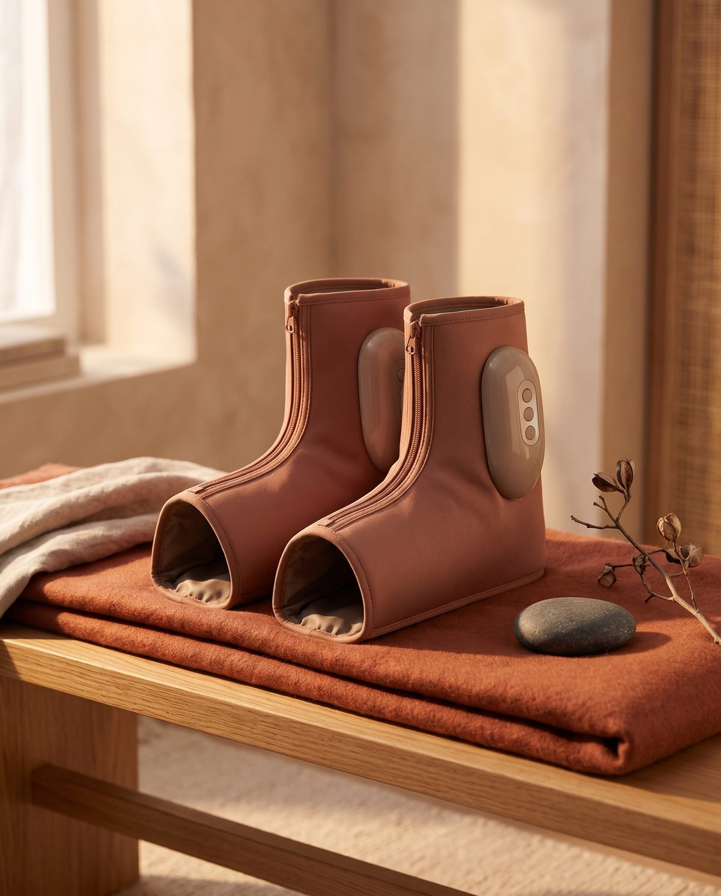</div><span class="n">01</span><h3>공기가 감싸고 놓아 줘요</h3><p>발과 발목 둘레를 따라 공기가 차고 빠져요. 천천히 반복해요.</p></div>
        <div><div class="fig rv"></div><span class="n">02</span><h3>고르는 만큼 달라져요</h3><p>3모드* 3강도*예요. 바깥쪽 조작부에서 버튼 세 개로 골라요.</p></div>
        <div><div class="fig rv"></div><span class="n">03</span><h3>신기 쉬워요</h3><p>앞 가운데 지퍼 하나로 열고 닫아요. 발가락 끝은 트여 있어요.</p></div>
      </div>
    </div>
  </section>

  <section class="scene-big">
    <div class="fig rv">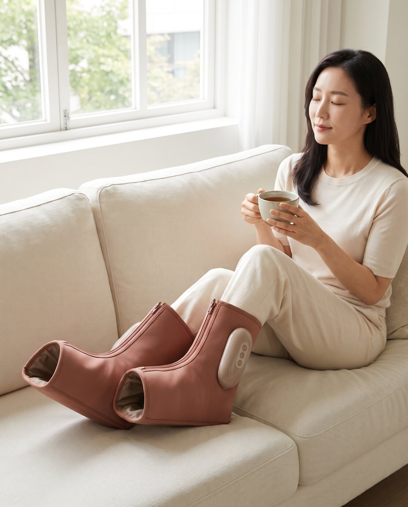</div>
    <div class="cap wrap">
      <h2>책 한 챕터, 십오 분.</h2>
      <p>샤워 뒤 창가 의자에 앉아요. 지퍼를 열어 발을 넣고 앞 지퍼를 올린 뒤 모드와 세기를 골라요. 15분* 타이머가 끝나면 조용히 멈춰요.</p>
    </div>
  </section>

  <section class="sec cream">
    <div class="wrap">
      <div class="sec-h"><p class="en">How it works</p><h2>열고, 신고, 눌러요.</h2></div>
      <div class="feat">
        <div><div class="fig rv"></div><h3>끝은 타이머가 알려 줘요</h3><p>15분* 타이머예요. 2200mAh* 배터리를 내장해요. 충전 방식은 확인 중이에요.</p></div>
        <div><div class="fig rv">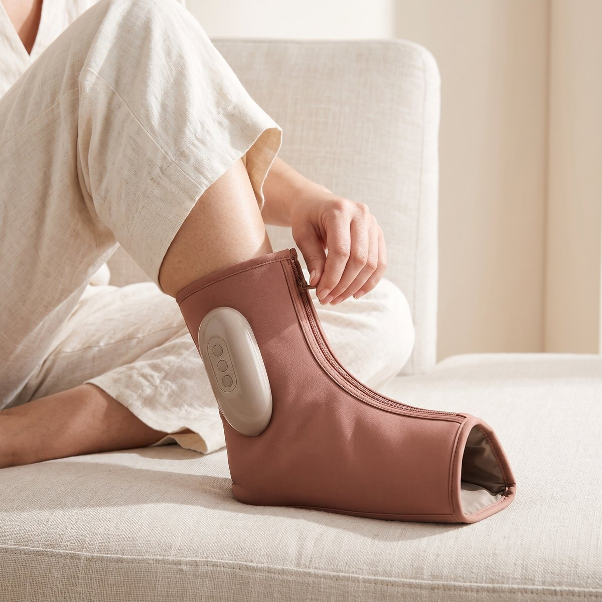</div><h3>한 켤레, 작은 상자에</h3><p>부츠 한 켤레 · 충전 케이블과 안내서는 확인 중이에요.</p></div>
        <div class="box"><h3 style="margin-top:0">쓰는 순서</h3><ol><li>지퍼를 열어요</li><li>발을 넣고 지퍼를 올려요</li><li>바깥쪽 조작부에서 모드와 세기를 골라요</li></ol><p>사이즈 조절과 주의 사항은 안내서에 적어요.</p></div>
      </div>
    </div>
  </section>

  <section class="sec paper">
    <div class="wrap">
      <div class="sec-h"><p class="en">Specification</p><h2>사양</h2></div>
      <table class="spec">
        <tr><th>방식</th><td>에어 압박</td></tr>
        <tr><th>모드·세기</th><td>3모드* 3강도*</td></tr>
        <tr><th>타이머</th><td>15분*</td></tr>
        <tr><th>배터리</th><td>2200mAh*</td></tr>
        <tr><th>무게</th><td>0.8kg* (기준은 확인 중)</td></tr>
        <tr><th>감싸는 곳</th><td>발과 발목 둘레</td></tr>
        <tr><th>크기·소재·소음·충전 시간</th><td>확인 중</td></tr>
      </table>
      <p class="note">* 는 공급처·판매처 표기 기준이에요. 수입 전 실측해서 고쳐요.</p>
    </div>
  </section>

  <section class="sec cream faq-sec">
    <div class="wrap">
      <div class="sec-h"><p class="en">Questions</p><h2>자주 묻는 질문</h2></div>
      <div class="faq">
        <details open><summary>얼마나 오래 써요?</summary><p class="a">타이머는 15분*이에요.</p></details>
        <details><summary>세기를 고를 수 있어요?</summary><p class="a">3모드*와 3강도*예요.</p></details>
        <details><summary>어떻게 충전해요?</summary><p class="a">배터리는 2200mAh*예요. 방식과 시간은 확인 중이에요.</p></details>
        <details><summary>어디까지 감싸요?</summary><p class="a">발과 발목 둘레예요. 크기와 무게는 확인 중이에요.</p></details>
        <details><summary>선물할 수 있어요?</summary><p class="a">포장과 카드는 확인 중이에요. 교환·보증 안내도 확정 뒤 이 자리에 적을게요.</p></details>
      </div>
    </div>
  </section>

  <footer class="end">
    <div class="wrap">
      <h2>공기가 천천히, 감싸고 놓아 줘요.</h2>
      <a class="back" href="#home">&larr; 홈으로</a>
      <p class="mark">TENERO</p>
    </div>
  </footer>
</main>

<script src="https://cdnjs.cloudflare.com/ajax/libs/gsap/3.12.5/gsap.min.js"></script>
<script src="https://cdnjs.cloudflare.com/ajax/libs/gsap/3.12.5/ScrollTrigger.min.js"></script>
<script>
(function(){
  var reduce = window.matchMedia('(prefers-reduced-motion: reduce)').matches;
  var hasG = !!(window.gsap && window.ScrollTrigger);
  if (hasG) gsap.registerPlugin(ScrollTrigger);
  var bar = document.getElementById('bar');
  var hero = document.getElementById('hero');
  var v = document.getElementById('heroV');
  var PAGES = ['home', 'tepore', 'carezza', 'respiro'];
  var TITLES = {home: '테네로 홈 시안', tepore: '테네로 상세 시안 · 테포레', carezza: '테네로 상세 시안 · 카레차', respiro: '테네로 상세 시안 · 레스피로'};

  /* ---- 첫 화면 영상 1개: 없거나 못 읽으면 포스터 사진 그대로 ---- */
  var heroVisible = true, pageOn = true, vReady = false;
  function hideVideo(){ v.style.display = 'none'; }
  if (reduce){
    hideVideo();
  } else {
    var phone = window.matchMedia('(max-width: 767px)').matches;
    v.poster = phone ? v.dataset.mPoster : v.dataset.pcPoster;
    v.addEventListener('error', hideVideo);
    v.addEventListener('loadeddata', function(){ vReady = true; playV(); });
    v.src = phone ? v.dataset.m : v.dataset.pc;
  }
  function playV(){
    if (reduce || !vReady || !heroVisible || !pageOn || v.style.display === 'none') return;
    var p = v.play(); if (p && p.catch) p.catch(function(){});
  }
  if ('IntersectionObserver' in window){
    new IntersectionObserver(function(es){
      es.forEach(function(e){ heroVisible = e.isIntersecting; if (heroVisible) playV(); else if (!reduce) v.pause(); });
    }, {threshold: .1}).observe(hero);
  }

  /* ---- 위 띠: 첫 화면을 지나면 어두운 바탕 ---- */
  function onScroll(){ bar.classList.toggle('solid', window.scrollY > window.innerHeight * .55); }
  window.addEventListener('scroll', onScroll, {passive: true});

  /* ---- 스크롤 연출: 크림 선 + 사진 천천히 ---- */
  function reveal(scope){
    if (reduce) return;
    document.querySelectorAll(scope + ' .rv').forEach(function(el){
      var img = el.querySelector('img') || el;
      gsap.fromTo(img, {scale: 1.1}, {scale: 1, ease: 'power2.out', duration: 1.4,
        scrollTrigger: {trigger: el, start: 'top 90%', toggleActions: 'play none none reverse'}});
    });
  }
  var ctx = null;
  function build(page){
    if (!hasG) return;
    ctx = gsap.context(function(){
      if (page === 'home' && !reduce){
        gsap.fromTo('.intro .vline', {scaleY: .18}, {scaleY: 1, ease: 'none',
          scrollTrigger: {trigger: '.intro', start: 'top 85%', end: 'top 25%', scrub: .5}});
      }
      reveal('#page-' + page);
    }, document.getElementById('page-' + page));
  }

  /* ---- 홈 / 상세 3개 바꾸기 ---- */
  function route(){
    var h = location.hash.replace('#', '');
    if (h === 'detail') h = 'tepore';
    var page = PAGES.indexOf(h) >= 0 ? h : 'home';
    if (ctx){ ctx.revert(); ctx = null; }
    document.querySelectorAll('[data-page]').forEach(function(m){ m.classList.toggle('on', m.dataset.page === page); });
    document.querySelectorAll('.bar nav a').forEach(function(a){ if (a.dataset.to === page) a.setAttribute('aria-current', 'page'); else a.removeAttribute('aria-current'); });
    document.title = TITLES[page];
    window.scrollTo(0, 0);
    onScroll();
    pageOn = page === 'home';
    if (pageOn) playV(); else if (!reduce) v.pause();
    build(page);
    if (hasG) ScrollTrigger.refresh();
  }
  window.addEventListener('hashchange', route);
  route();
})();
</script>
